Who is the Traitor?
Who is the Traitor?
Jaffna Monitor
hellojaffnamonitor@gmail.com
25
Interview
BY:
Kaniyan Pungundran
fzpad; G+q;Fd;wd;
Who is the
Traitor?
Exclusive
Interview
with Karuna
Amman
Part-3
Is it true to what extent you said that
the Eastern Province fighters were
marginalized under the leadership of
the Tigers?
The Liberation Tigers of Tamil
Eelam organization (LTTE)
comprised
26
main
structures, and this
number
would
increase if smaller
structures
were
included.
However,
individuals
from
the
Eastern
Province
were not appointed to
leadership roles or even
to second or third-level
responsibilities in any of
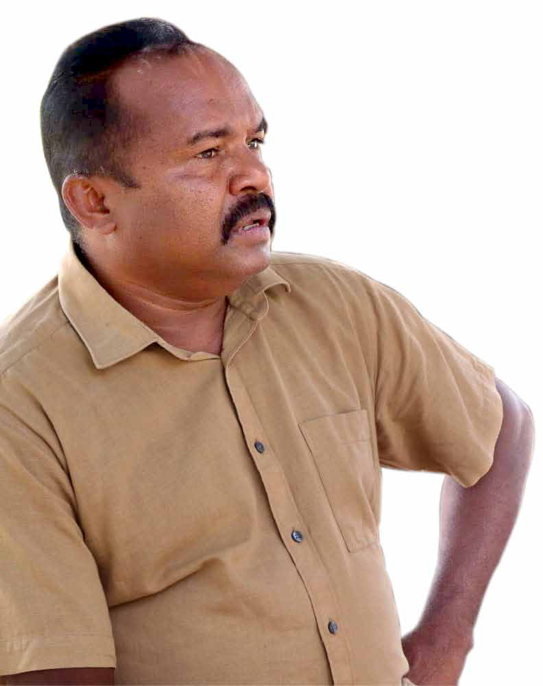
Jaffna Monitor hellojaffnamonitor@gmail.com 26 these structures. It is unclear whether this was intentional or unintentional, but Eastern fighters were significantly excluded from leadership positions. In the context of the Liberation Tigers of Tamil Eelam's organizational structure, Pathuman was the commander for Trincomalee, while I held the commander position in Batticaloa. These appointments were notable exceptions, as no other individuals from the Eastern Province were assigned leading roles, nor were they given secondary or tertiary positions in any other divisions of the organization. Fighters from the Eastern Province actively participated in all divisions of the LTTE, including intelligence, politics, finance, and the Sea Tigers. After my decision to leave the LTTE, the organization attempted to demonstrate its impartiality by promoting Eastern figures like Karikalan and Marshal to leadership roles. However, this action was viewed by many as merely a superficial gesture rather than a genuine commitment to inclusivity. However, I firmly believe that the unequal treatment of Eastern fighters by the LTTE leadership was not the driving force behind my departure from the organization. At that time, we did not perceive such disparities as urgent or significant. We followed our leader Prabhakaran's decisions without question or opposition, irrespective of whether he appointed leaders from the East or the North. Our primary commitment was to the larger cause — the liberation struggle of the Tamil people. Therefore, the preferential treatment of Eastern fighters was not a major concern for us and did not influence my decision to leave the LTTE. If you hadn't separated, some believe the Liberation Tigers wouldn't have lost the final battle, while others say that if Karuna hadn't separated, there would have been another Mullivaikkal tragedy in the Eastern Province as well. What is your opinion on this? Had we, the Eastern fighters, not separated from the mainland Vanni Tigers, the war might still be ongoing today. As a key strategist behind several of the Tigers' earlier critical battles, I likely would have played a similar role in the final battle, where Prabhakaran met his demise and the LTTE faced military defeat. I am convinced that had I been with Prabhakaran, he would not have met his end in the Nandikadal Lagoon, abandoned like an orphaned corpse. The commanders who strategically orchestrated my departure from the LTTE ultimately failed. Not only were they unable to save their leader and the organization, but they also acted incompetently and met their demise en masse in the final days of the conflict.
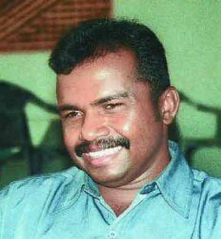
Jaffna Monitor hellojaffnamonitor@gmail.com 27 I believe that Prabhakaran might have disregarded my military advice during times when the LTTE was faring well, but he would likely have considered it during dire situations when the challenges were immense. Had we not parted ways, the LTTE would almost certainly still be engaged in conflict to this day. However, whether we would have eventually emerged victorious in the war remains a matter of debate. On that point, I still harbor uncertainties. Why is it so? A war is only truly victorious when military successes are translated into political victories, and this aspect was notably absent in Prabhakaran's strategies and within the LTTE. Prabhakaran concentrated solely on military means and never fully embraced the potential of political victories during his lifetime. Therefore, I believe that military triumphs alone would not have been sufficient for the ultimate success of our cause. Therefore, if we, the Eastern fighters, had not separated, we would have possessed the strength and capability to combat the Sri Lankan army. I believe that had we been present, neither the Tigers nor their leader, Prabhakaran, would have met their tragic fate at Mullivaikkal. Okay. How would you have prevented Prabhakaran's death and the military defeat of the LTTE in the final battle? There's a theory that guerrilla warfare often evolves into conventional warfare as it expands. An insurgency, initially employing guerrilla tactics, gains ground and subsequently transforms into conventional warfare. While reverting to guerrilla tactics after this shift is difficult, it is not impossible. As the war neared its end, the Tiger leadership should have switched back to guerrilla warfare. This represents a critical mistake by the LTTE leadership – they persisted in a losing war using conventional military tactics, following the misguided advice of their commanders. There isn't a single forest or area in the North and East that is unfamiliar to me. The Vanni mainland, replete with dense forests and naturally hidden spots, some almost unknown, provided numerous opportunities for concealment. Yet, instead of taking refuge in these extensive forests, the LTTE leadership retreated to a place like Mullivaikkal, from which escape was virtually impossible. Had the Tigers reverted to guerrilla tactics in the final stages and retreated into the forests, they might have continued the fight, potentially sparing the Tamil people some of the war's brutalities. Instead, the LTTE leadership funneled both their fighters and civilians into a virtually inescapable position at Mullivaikkal. This decision was not only foolish and nonsensical but also demonstrated a glaring lack of military insight. Any military strategist,
Jaffna Monitor hellojaffnamonitor@gmail.com 28 even with a basic understanding of warfare, would have advised against such a retreat. The mystery remains as to who counseled Prabhakaran to move to Mullivaikkal. Surprisingly, Prabhakaran, known for his military acumen, acquiesced to this strategy. If the Tigers had shifted back to guerrilla warfare, their leader, Prabhakaran, might have survived. Had I been in that situation, I certainly would have adopted this strategy. I would have turned the Tiger fighters into guerrillas, potentially saving both the organization and its leader, Prabhakaran. The extensive wilderness of the Vanni region provides ample opportunities for effective guerrilla warfare. What is your opinion about the atrocities that the LTTE unleashed on its own people in the final war? In the final battle, the LTTE resorted to using its arms and ammunition against the Tamil people it claimed to represent, engaging in desperate and reckless forced recruitment. Tragically, the LTTE employed their own people as human shields. Moreover, those who attempted to flee the conflict zone were met with lethal force, shot and killed by the Tigers. During the LTTE's final defeat at Nandikadal Lagoon, I was serving as the Minister of National Integration and was involved in overseeing the resettlement of people at that time. I met many individuals who were victims of the LTTE's final war madness. They shared stories with me about the atrocities committed by the LTTE in the war's last stages. In some cases, the LTTE even killed fathers who resisted the forcible abduction of their sons. Additionally, some LTTE fighters and leaders emotionally explained to me how a freedom movement, built on the dedication and sacrifices of its fighters, degenerated into a ruthless, heartless organization that abducted children in the final stages of the war. It's a tragic scenario indeed. Had I been present, I would have certainly opposed such actions. Resorting to the forced recruitment of young people is a definitive sign that a freedom struggle has lost its moral compass. One must question the kind of fighting spirit Photos Depicting the Brutal Reality of the Final War, Culminating on May 19th, 2009.
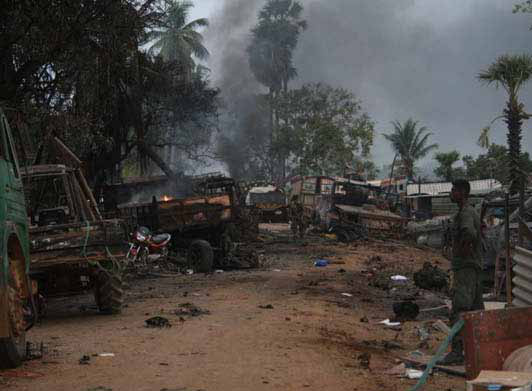
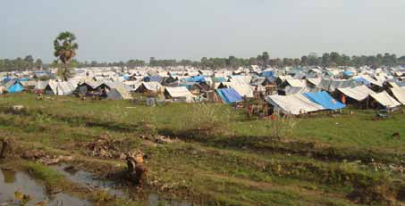
Jaffna Monitor hellojaffnamonitor@gmail.com 29 that can be expected from youths coerced into combat. True efficacy in battle necessitates genuine motivation, something that cannot be anticipated from unwilling participants. One of the major accusations against you is that you also engaged in forced recruitment, and there are credible pieces of evidence supporting this claim. It is alleged that the worst instances of recruitment occurred in the East during your tenure as a commander. What is your response to these allegations? Leader Prabhakaran introduced the 'One Fighter per Household' initiative, drawing inspiration from Singapore. He mandated that one member from each household join the Tigers, instructing all district commanders of the LTTE in the North and East of Sri Lanka to enforce this policy. This was an attempt to mirror Singapore's compulsory military training. The commanders and fighters in the East, known for their unwavering loyalty to Leader Prabhakaran, readily complied with his orders, even when it involved challenging tasks such as forced recruitment. Forced recruitment was a reality in the Eastern Province, and I must acknowledge my responsibility in this matter. It is, however, crucial to recognize that a significant number of individuals from the East joined the movement voluntarily. The results of this initiative were mixed—approximately 50% successful and 50% unsuccessful. While many mothers were opposed to this practice, there were also those who willingly permitted their children to enlist. The forced recruitment that took place during my tenure as a commander is an undeniable fact. Another incontestable truth is that it was carried out under the directives of Prabhakaran and was not solely initiated and implemented by Karuna Amman. Prabhakaran's control over the organization was so absolute that no action could transpire without his awareness. He wielded his authority over the Tiger organization with an iron fist. We, the commanders and members, were essentially executors of his commands. During this time, the influx of youths joining the LTTE from the North diminished, as many parents chose to send their children abroad for safety. As a result, many recruits from Eastern regions like Batticaloa, Ampara, and Trincomalee joined the Tigers. These Eastern fighters, often engaged in battles in the North, primarily believed they were fighting to protect
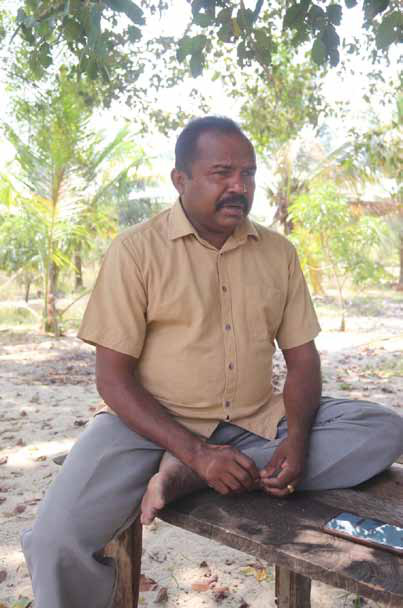
Jaffna Monitor hellojaffnamonitor@gmail.com 30 leader Prabhakaran. In fact, our Eastern fighters played a crucial role in saving Prabhakaran's life on several occasions, starting with the 1989 Operation Checkmate by the Indian forces. Therefore, when I decided to leave the LTTE, I was faced with a crucial decision regarding my fighters. I ordered the Eastern fighters under my command to disarm and return to their homes to avoid a devastating conflict with the Vanni Tigers. This decision was taken to prevent a fratricidal conflict. As a result, approximately 6,000 Eastern fighters were spared from further violence and sent home. My primary goal was to avoid a bloody confrontation with the Vanni Tigers. Thankfully, this decision allowed these young individuals to reunite with their families and remain alive. Additionally, I must acknowledge a painful part of our history. After the departure of the Indian Peace Keeping Force, the LTTE was responsible for the ruthless elimination of around 8,000 members of other militant groups in a fratricidal massacre. This event has left me with a deep sense of agony and guilt. To prevent further fratricide, I made the decision to send my fighters home. Do you now regret the forced recruitment? If you hadn't engaged in recruitment, those young people might still be alive, right? Honestly, I do harbor regrets about my actions, even though they were executed on the commands of Prabhakaran. However, it's crucial to note that there were no major battles following the forced recruitment of fighters from the East. The split within the Liberation Tigers organization occurred in 2004, at a time when these recruits were still in
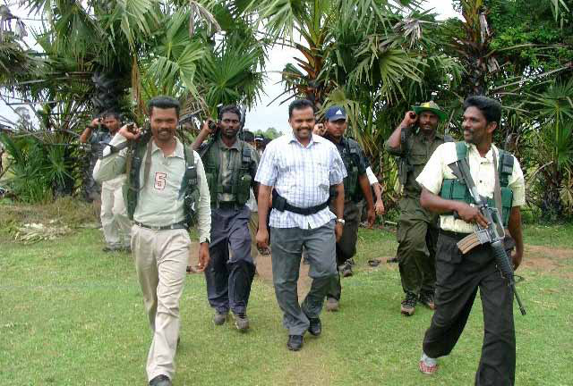
Jaffna Monitor hellojaffnamonitor@gmail.com 31 training. As a result, the majority of the Eastern fighters who were conscripted did not engage in active combat. This, fortunately, meant that their lives were ultimately spared from the violence of war. Nevertheless, it's important to acknowledge that thousands of Eastern fighters lost their lives in earlier battles in the North, such as the Jayasikurui operation, the attack on the Pooneryn camp, and the battle of Elephant Pass. It is noteworthy, however, that most of these fighters had joined the organization of their own volition. Even in my capacity as the commander of the East, I maintain the belief that when a liberation movement like the LTTE resorts to forced recruitment, it is a harbinger of impending failure. Such actions signal diminishing support from the people for the cause. Despite holding this conviction, I adhered to the orders of my leader, Prabhakaran, in matters of recruitment. Initially, young individuals like myself joined the struggle willingly. Joining the Tigers was a challenging process at that time; candidates were selected only after several trials. Subsequently, we launched intensive campaigns to recruit more people into the organization. However, this eventually led to forced recruitment. The forced recruitment that occurred in Kilinochchi and Mullaitivu during the final battle represented a significant betrayal by the Tigers and their leader, Prabhakaran, to their own people. To be continued. Mahathaya's Saga: Power, Paranoia, and Politics in the LTTE Will Appear in the Next Issue Part-6
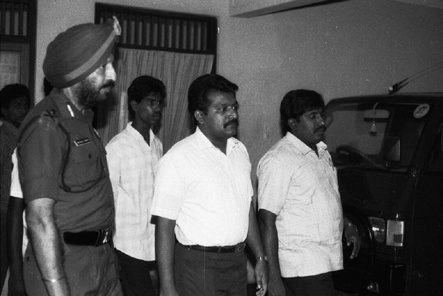
Jaffna Monitor hellojaffnamonitor@gmail.com 32 A s Nuwan Thushara's late-swinging slingshots shattered the stumps of Bangladeshi batters, making the ball behave as if it were tied to his hands by an unseen string, it was déjà vu for Sri Lankan fans. Is Sri Lankan cricket on its route to revival? Is it myth or reality? One might wonder. This is a dilemma we have faced many times before, only to end up disappointed. It wasn't an uncommon sight to see a man with a similar action dismantling opponents with unconventional terror arising from sheer unorthodoxy. But more than the 'we've been here and seen this before' feeling, it showcased Sri Lanka's immense depth in bowling. I dare say that at no point in our history have we had such variety and depth in our bowling department. It's a serious statement, considering we were blessed to witness Vaas, Murali, and Malinga playing together in the past. The very opportunity to make such a statement seems paradoxical, considering our current state of affairs in T20Is. However, with two consecutive wins against Afghanistan and Bangladesh, it's inevitable that thoughts of a strong showing in the upcoming WT20 will begin to sprout in the minds of fans. By: Dr. Aravinthan Arunthavanathan Sports A myth or reality? Sri Lanka Cricket's revival:
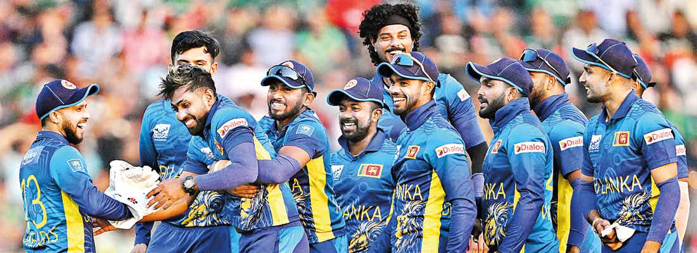

Jaffna Monitor hellojaffnamonitor@gmail.com 33 Then where do we stand, and what can we hope for? Let us be realistic. On paper, we have a bowling attack, which is on par with any. Chameera, when fit and firing, is a dream. Madushanka has shown what he can do barely a few months before at the ODI World Cup. Theekshana and Wanindu have demonstrated their worth and past their honeymoon periods. Yet the combination of a mystery spinner who can bowl in powerplays and stem the run flow at the death together with a gun leg-spinning all-rounder is a gift any team would pay any fortune to acquire in a T20 side. The above alone is filthy rich on paper. It doesn't end there. Add to that two slingers from the Malinga School of Bowling. Pathirana and Thushara can be darlings and demons on alternate days. The pendulum can swing in your favour or the other way in extremely ecstatic and frustrating ways. Yet possessing these to modern artilleries is a blessing beyond imagination. A fit Mathews, with his skill and experience, has the potential to catch opponents off- guard in powerplays. The Sri Lankan bowling lineup looks supreme on paper, but 'on paper' is the key phrase. What really matters is what transpires on the field. This is largely determined by fitness and the ability to convert potential into performance. It's unpredictable whether all these individuals can synchronize to create a synergy that resonates like a symphony in the hopeful hearts of Sri Lankan fans. However, considering where we were just a few years ago, the mere luxury of hoping for such magic is a blessing for any fan.
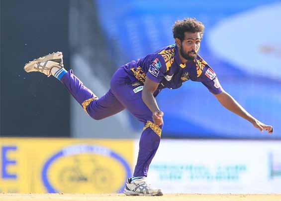
Jaffna Monitor hellojaffnamonitor@gmail.com 34 How these players will emerge post-IPL, especially in regards to fitness and match readiness, will be extremely important. There is a high chance that Pathirana and Theekshana will be exposed in this year's IPL, as teams will know that getting the better of them is key to succeeding against CSK. This will impact Sri Lanka's campaign. Surely, there will be a few frustrating injuries and loss of form. Yet, the pipeline is so strong that we should be able to overcome these issues and field a potent attack. A potent attack – that's the key, the ultimate game changer in T20s. It's worth remembering that potent bowling attacks were crucial to Sri Lanka's early dominance in the T20I era. This lineup, surely on paper, has the potential to match their predecessors. The million-dollar question is whether they will be fit and smart enough. That remains to be answered. While the bowling equity seems well funded, the batting cannot boast of the same. However,
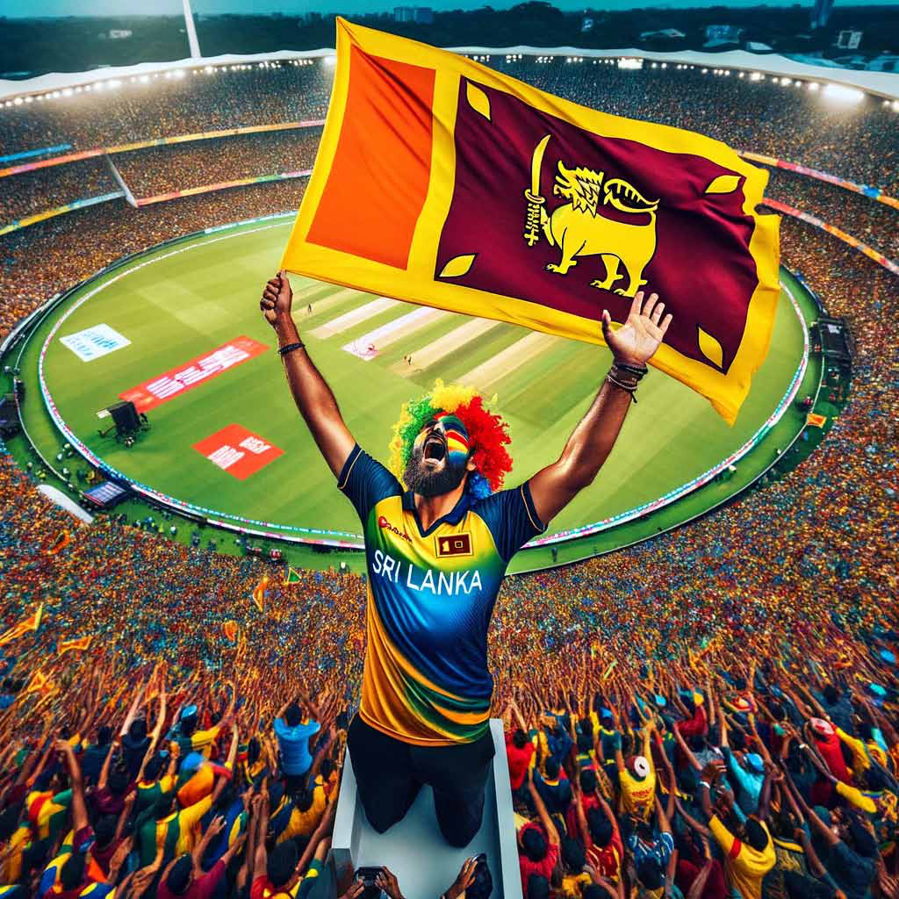
Jaffna Monitor hellojaffnamonitor@gmail.com 35 the encouraging facet is an almost settled lineup with few batters contributing consistently. While none of them are on par with the global T20 standards, as reflected by the non- selection of any, even in IPL squads, they can derive inspiration from the past. In 2014, merely months before the World T20 triumph, the likes of Sangakkara, Mahela and Dilshan formed the core of Sri Lanka's batting. While many reasons were attributed, the simple fact was that IPL dynamics filter those who fall behind the pace at which the game is evolving, and selection and auction prices, more often than not, indicate the T20 worthiness. They found a way to execute a winning campaign, playing to their strengths despite lagging behind. The current lineup up too should strive for the same. Nissanka's newfound aggressive approach, Mendis's composure and consistency, Sadeera's stability and Kamindu's assuredness, together with Asalanka's adaptability, can surely help Sri Lanka put decent scores, which would give the bowling attack a chance to leverage in favour of the team. They may not have the experience of their predecessors but surely they have the necessary skills to put on a decent show. Overall, these two series wins shouldn't mean much, considering Sri Lanka's past legacy. But the present is different. Despite having a team that looks good on paper, there are shortcomings that could be exposed by better teams. However, these wins suggest that Sri Lanka is well on its way to becoming a better team among the lower-tier teams. That's a good starting point. There is a sense of clarity, newfound freedom, and accountability. The signs are promising. A semi-final berth would be a jackpot. But a strong run towards a semi- final berth, achieving at least a 5th or 6th position finish, would be a good deal given the current context. Is Sri Lanka's resurgence a myth or reality? No one would know. However, given the talent pool and the latest developments, one cannot be found at fault for assuming or at least hoping that it's not a myth but a reality in the making.
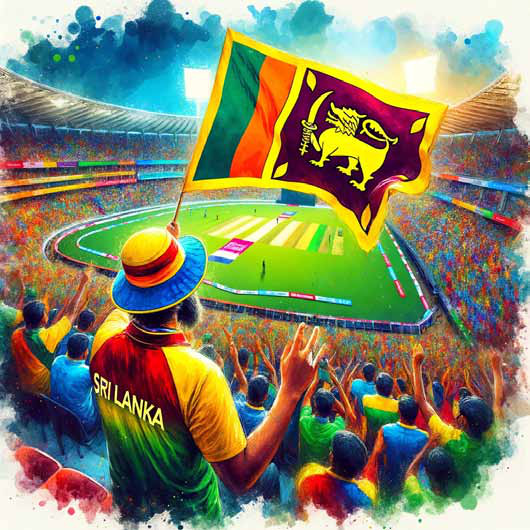